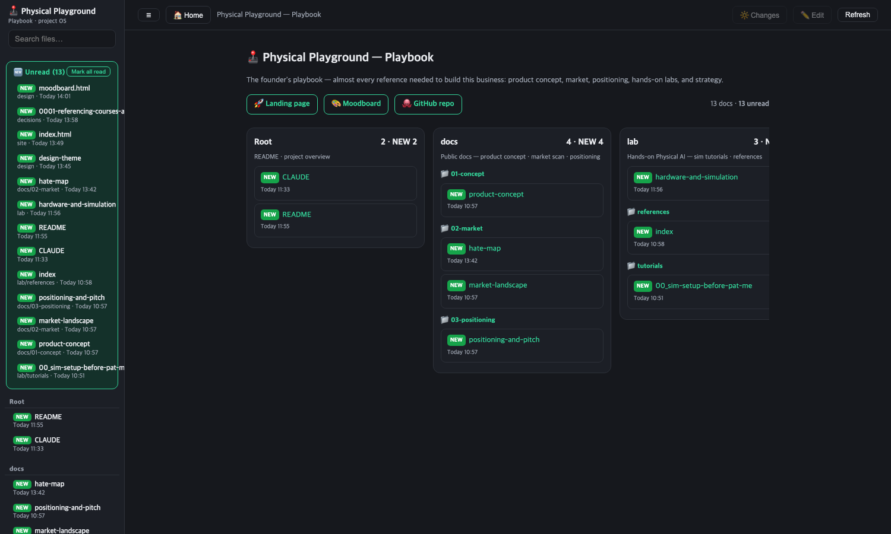

함께 만들 사람을 찾습니다
이 반란에

이 반란에
합류하실래요?
Physical Spark은 physical AI를 놀이로 배우는 피어리뷰 학교입니다. 지루한 튜토리얼에 대한 반란이죠. 아래는 우리가 뭘 만들고 있고, 왜 지금이며, 당신과 무엇을 함께 하고 싶은지에 대한 솔직한 이야기입니다.
Physical Spark은 physical AI를 놀이로 배우는 피어리뷰 학교입니다. 지루한 튜토리얼에 대한 반란이죠. 아래는 우리가 뭘 만들고 있고, 왜 지금이며, 당신과 무엇을 함께 하고 싶은지에 대한 솔직한 이야기입니다.
École 42처럼 강사가 없습니다. 대신 로봇팔 미션을 과제로 내주고, 학습자들이 서로의 풀이 영상을 피어 리뷰합니다. 좋아요를 많이 받은 풀이가 갤러리 위로 올라오죠. 난이도는 "로봇 한 번도 안 만져본 사람"도 첫 성공을 맛보게 아주 낮은 데서 시작합니다.

미션 2 — pick & place

더 어려운 트랙 — 새로운 세계
미션 시퀀스: ① "나를 토닥여줘"(애착 + 낮은 성공 기준) → ② 물건 집기·옮기기 → ③ "무궁화 꽃이 피었습니다" (말하는 동안 로봇이 움직이고 멈추는 순간 정지 — 정답이 없어서 피어 리뷰가 빛나는 과제, 오징어게임 덕에 글로벌 데모 에이스).
로봇의 "뇌"(파운데이션 모델)에 수십억 달러가 몰리는데, 그 뇌를 다룰 줄 아는 사람은 태부족입니다. 하드웨어 랩 구축비는 5년 전 $50k+ → 지금 $3~5k로 붕괴했고, Hugging Face LeRobot·NVIDIA가 오픈소스 스택을 무료로 깔아주고 있어요. 판이 열렸고, 진입 장벽이 역사상 가장 낮아진 창(窓)입니다.
출처 요약: 로봇 펀딩 분석 · 자세한 근거는 저장소 knowledge/ 폴더(잡마켓·산업지형·플레이어 분석)에 정리돼 있습니다.
대부분의 개발자는 SaaS(웹·앱 소프트웨어) 세계에만 살아왔죠. 그 세계는 여전히 거대하지만, 2026년 지금 지각변동 중입니다:
SaaS 시장 자체는 계속 커요($375B → $1.48T, 약 19% CAGR). 하지만 차별화 없는 SaaS는 AI가 복제합니다. 그럼 방어막은 어디에? — 물리 세계(하드웨어 + AI). AI 에이전트가 소프트웨어는 복제해도, 로봇팔은 복제하지 못하니까요.
연 성장률(CAGR) — Physical AI가 SaaS의 약 2.5배
같은 출발선(2026=100)에서 5년 성장 궤적
출처: Forbes — SaaSpocalypse · Deloitte SaaS×AI 2026 · Physical AI 시장 (수치는 리서치 기관별 편차 있음, 상대 크기·성장률로 읽을 것).
경쟁 제품들의 실제 부정 리뷰를 모아봤더니, 불만이 세 단어로 모였습니다 — broken(고장), ignored(무시), abandoned(방치).
| 사람들이 싫어하는 것 | Physical Spark의 답 |
|---|---|
| 튜토리얼이 조용히 안 됨 → 막히면 혼자 | 사람이 피어 리뷰 — 죽은 문서와 씨름하지 않는다 |
| 지원은 무시, 포럼은 무덤 | 플랫폼이 곧 지원 — 동료가 답하고, 되는 풀이 갤러리가 길잡이 |
| 업체가 제품을 방치, 폐쇄 생태계 | 오픈소스 스택(LeRobot/GR00T) — 한 회사가 당신을 가둘 수 없다 |
| 혼자 하다 중간에 포기 | 피어 리뷰 + 습관 기반 리텐션 장치로 코호트가 완주 |
한 줄로: 그들은 상자를 팔지만, 우리는 그 상자 둘러싼 방(커뮤니티)을 운영합니다.
아직 초기지만, "아이디어"가 아니라 돌아가는 것이 이미 쌓여 있습니다 — 전부 build-in-public:

Playbook — 프로젝트 운영 대시보드

진짜 도구 — 오픈소스 SO-101 로봇팔
지금 목표는 투자가 아닙니다. 무료 버전에서 완주율·재참여 같은 숫자를 먼저 만들고, 그 뒤에 고민합니다.
École 42 출신의 인디 메이커입니다. 이전에 습관 인증 서비스를 2년 운영(리텐션 90%)했고, 여러 서비스를 직접 배포해왔어요. 지금은 physical AI를 learning in public으로 파고드는 중 — 로봇팔을 직접 사서 배우는 과정을 커리큘럼과 콘텐츠로 만듭니다.
GitHub: bookseal · 포트폴리오: bit-habit.com
강사가 없듯 관리자도 담을 치지 않습니다 — 오픈소스처럼 누구나 고치고 제안할 수 있어요. 커리큘럼 오타 하나부터 새 미션 아이디어까지, 아래 표준 흐름을 따르면 됩니다. GitHub를 처음 써도 괜찮아요.
뭘 고치거나 제안할지 먼저 GitHub 이슈로 남깁니다. 중복을 막고 방향을 먼저 맞추는 단계.
처음이라면 good first issue 라벨부터 골라보세요.
repo를 fork(내 복사본)하고 feature/<주제> 브랜치를 만듭니다.
이름은 kebab-case(소문자+하이픈). 예) fix/typo-mission-1.
작게, 자주 commit합니다. 커밋 메시지는 영어로 쓰는 게 우리 규칙이에요
(예: fix: correct typo in mission 1).
내 fork에서 원본 main으로 PR을 엽니다. 관련 이슈를 연결하고
(Closes #12), 가능하면 결과 스크린샷·영상을 붙여주세요.
관리자가 코멘트로 개선을 요청하거나 승인합니다. 요청을 반영해 다시 push하면 PR이 자동으로 갱신돼요 — 대화하며 함께 다듬는 단계.
승인되면 squash로 main에 합쳐지고, GitHub Pages가 자동 배포합니다.
당신의 기여가 곧바로 라이브 사이트에 반영돼요.
fork·branch·rebase 같은 단어가 낯설다면 —
저장소 기여자 git 가이드에
원어민 감각으로 하나씩 풀어놨어요.